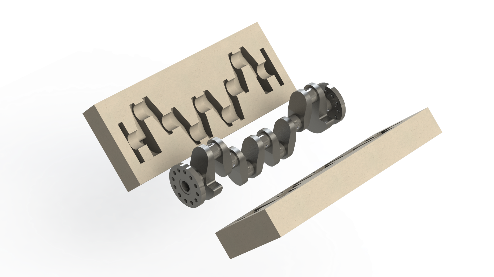

club_school_projects
manufacturing_processes_crankshaft_modeling
As part of a semester-long project researching and reporting on methods used when manufacturing a car crankshaft, I modeled an engine crankshaft and its accompanying mold to demonstrate the casting process. Our group chose to report on isothermal forging, with a focus on reducing oxidation and improving the nitriding process.
Cross-section

Assembly with mold

Final model